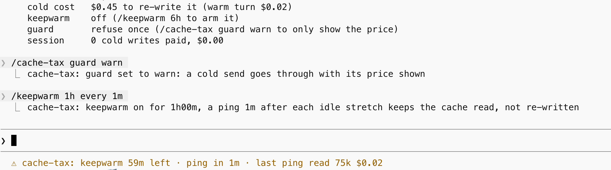
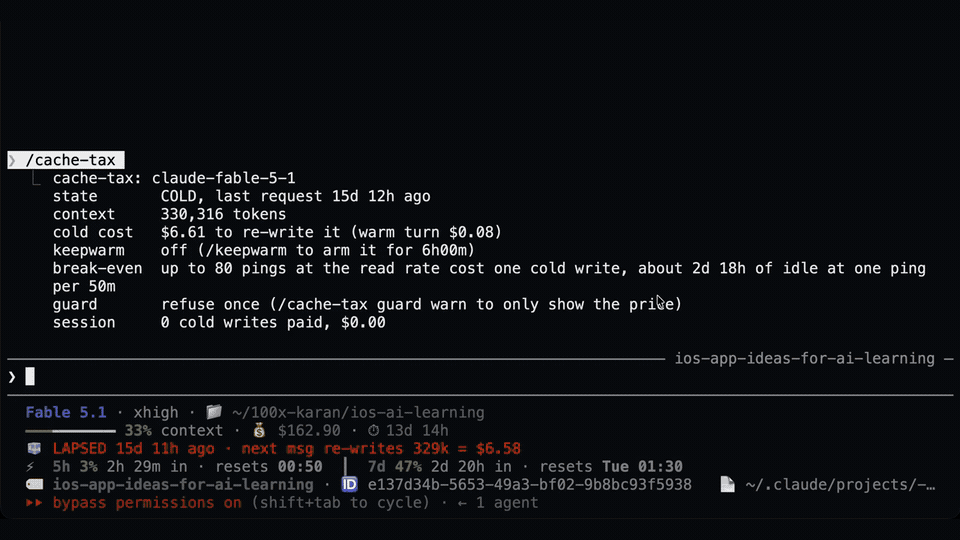

For Claude Code · Free and open source
Keep your prompt cache warm while you take a break.
Arm a window before lunch. If you return to a cold session, see the estimated rewrite cost before sending.
Warming needs early-access function hooks, a one-hour cache, and Claude Code left running. Pings cost tokens.
Keep it warm
/keepwarm arms six hours. After 50 idle minutes, an in-process timer sends a tool-less fork over the session. Each ping checks its usage; zero reads or writes reaching 10% of reads stop the loop. Claude Code gives forks a five-minute cache TTL by default, so set subagentPromptCacheTtl to 1h; how long a ping keeps the cache alive is not yet measured.
/keepwarm off stops it. An already-cold session waits for your next turn before pinging.
Catch the cold send
For a context of at least 50,000 tokens, the guard drops your ordinary message once when its one-hour clock says the cache is cold. It shows the estimated rewrite cost. Resend to continue.
After a detected cold write, it automatically arms a three-hour warming window. The session card keeps score.
Recorded in real sessions

See the cold-send refusal

Install through the marketplace
claude plugin marketplace add karanb192/claude-code-mods claude plugin install cache-tax@claude-code-mods
Start Claude Code with the early-access flag:
CLAUDE_CODE_ENABLE_FUNCTION_HOOKS=1 claude
In a warm session, run /keepwarm. Use /keepwarm 90m for a shorter window. Start with a window you expect to return within.
No function hooks yet? The hook version warns by default, refuses once with CACHE_TAX_BLOCK=1, and adds a status-line countdown that can also run on its own.
Know what you are paying for
- The Mod assumes a one-hour cache. API-key and other billing paths can default to five minutes. Check your cache lifetime before using it.
- A ping bills reads, writes, uncached input and output. Fork output is uncapped. The displayed dollars are API-equivalent estimates, not additional subscription charges. Quota savings have not been measured.
- Prefix changes can break the cache before its timer expires. A warm read proves that ping hit the cache; it does not guarantee your next message will.
- Function hooks are early access. The README lists hooked events, engine calls and the threat model. The Mod makes a model request and stores its settings; inspect that footprint before installing.